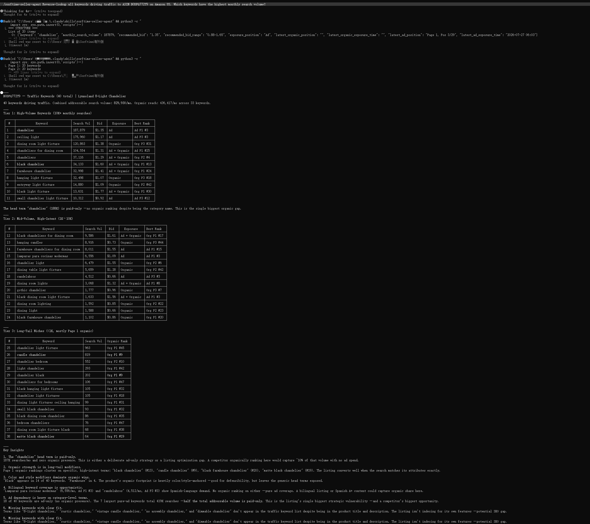

The best seller tools of 2025 locked their data behind proprietary dashboards. The best tools of 2026 let your AI agent access it directly — open source, MCP-native, inspectable.
That shift from dashboard to API, from visual interface to programmable data, changes how sellers research products, monitor competitors, and manage listings. The difference is not marginal. It changes the relationship between a seller and their data.
### The Dashboard Tax
Every seller who has used a traditional research tool knows the pattern: log in, click through menus, wait for charts to render, export a CSV, then open it in a spreadsheet to apply your own logic. The workflow is point-and-click, session-based, and manual. Each export is a snapshot. Each analysis requires the same series of clicks the next time you run it.
This is the dashboard tax. It takes time, it breaks automation, and it creates a ceiling on how much data one person can reasonably process. A seller managing three marketplaces across twenty ASINs can spend hours each week just gathering the data needed to make decisions.
MCP — the Model Context Protocol — changes the underlying architecture. Instead of a human clicking through a web interface, an AI agent connects directly to the data source, runs queries in natural language or scripted commands, and returns structured results. The agent does not wait for page loads. It does not export CSVs. It asks and receives.
### What Open-Source MCP Means for Sellers
Open source matters here for three reasons.
First, inspectability. When a tool is closed-source, the logic that determines a "product score" or "opportunity rating" lives inside a black box. The seller sees a number but cannot verify the inputs or weights that produced it. An open-source MCP exposes the full query path: what data was requested, what parameters were used, how the result was derived. A seller can trace a recommendation back to its source data and adjust the logic to fit their specific criteria.
Second, customization. A dashboard tool offers one view of the data, designed by the tool vendor for a hypothetical average user. An open-source MCP lets sellers build their own views. The same underlying data can feed a daily price-drop monitor, a weekly keyword opportunity report, a one-time blue ocean scan, or a batch competitor analysis across six marketplaces. The data does not change. The access pattern does.
Third, no lock-in. Data accessed through an open-source MCP remains available even if the seller switches tools. There is no proprietary format, no export fee, no sunset risk for a specific dashboard feature. The protocol is standard. The implementation is transparent. The seller owns their integration.
### Workflow Before and After
A typical competitor analysis workflow before MCP looks like this:
The same workflow through an open-source MCP:
pip install sorftime-seller-agentThen run a script that queries the agent for each ASIN, collects the results, and writes them to a file. The entire batch executes in seconds, not hours.
# Copy-paste ready: analyze three ASINs in one pass
python3 scripts/analyst.py --mode competitor --platform amazon --site US --asin B08N5WRWNW
python3 scripts/analyst.py --mode competitor --platform amazon --site US --asin B09G3HRMVB
python3 scripts/analyst.py --mode competitor --platform amazon --site US --asin B0B84DJH6GEach call returns structured data: traffic keywords with impression share, price history, sales rank trends, review velocity. The output can feed directly into a monitoring system, a dashboard, or a weekly report — no manual cleanup needed.
The same principle applies to product discovery. Instead of browsing category pages and scanning for products that look interesting, a seller defines their criteria and lets the agent scan across 160+ data dimensions:
python3 scripts/picker.py --mode blueocean --platform amazon --site US --keyword "kitchen storage"The output is a scored list, with each product's risk profile, market concentration, and estimated entry cost. The seller reviews the list, refines the parameters, and re-runs. No clicking through 50 pages of search results.
### The Architecture
The sorftime-seller-agent follows a documented pattern: a configuration file holds the MCP key, a bridge layer connects to the Sorftime data server, a set of purpose-specific scripts (picker, analyst, calculator, monitor) wrap the underlying tools into seller-facing operations, and a router matches user intent to the correct script.
Every part of this stack is open. The scripts that compute the Hidden Profit Index, the category ranking that surfaces blue ocean categories, the profit calculator that estimates FBA fees — all of it can be read, modified, and extended. A seller who wants a different risk weighting can fork the repository and adjust the parameters. A developer building a custom dashboard can call the same MCP tools from a different client.
### What Open Source Allows That Dashboards Cannot
A dashboard is a single point of access. It serves one user at a time, through one interface, on one device. An open-source MCP can serve many clients simultaneously: a scheduled script that checks prices every morning, a Slack bot that alerts on keyword rank drops, a custom dashboard that visualizes category trends, a Colab notebook that runs weekly product scans.
These integrations share the same data source but serve different purposes. The seller decides what to build, not the tool vendor.
### Getting Started
The codebase is available at the Sorftime repository. Clone it, configure the MCP key, and the agent is ready to query across 86+ tools covering Amazon, Walmart, TikTok Shop, Shopee, TEMU, and 1688.
git clone https://github.com/sorftime/sorftime-seller-agentNew accounts receive free trial credits at open-intl.sorftime.com. Registration takes two minutes through Google login or email. The MCP key is generated on the platform dashboard under the MCP tab.
The tools of 2025 gave sellers dashboards. The tools of 2026 give sellers access — direct, programmable, inspectable access to the data that drives their decisions. Open-source MCP makes that access standard, not exceptional.